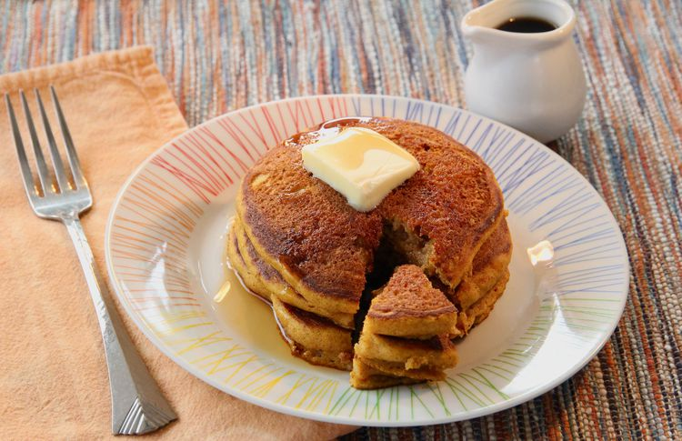

Pancakes

Here you can see how you can cook those wonderful pancakes you see in the pictue above.
- 1 cup all-purpose flour
- 2 tablespoons white sugar
- 1 tablespoon pumpkin pie spice
- 1 teaspoon baking powder
- 1 teaspoon baking soda
- ½ teaspoon salt
- 1 cup buttermilk
- ½ cup canned pumpkin
- ¼ cup canola oil
- 2 large eggs
- 1 teaspoon vanilla extract
- 1 serving nonstick cooking spray
- Whisk flour, sugar, pumpkin pie spice, baking powder, baking soda, and salt together in a large bowl. Whisk in buttermilk, pumpkin, oil, eggs, and vanilla extract until well blended.
- Spray a large nonstick griddle or skillet with cooking spray. Heat over medium heat.
- Pour batter by scant 1/3 cupfuls into the hot skillet, working in batches. Cook until bubbles form on the surface of pancakes and bottoms are lightly browned, about 1 1/2 minutes per side. Repeat with remaining batter, spraying the skillet with cooking spray between batches as needed. Serve warm.